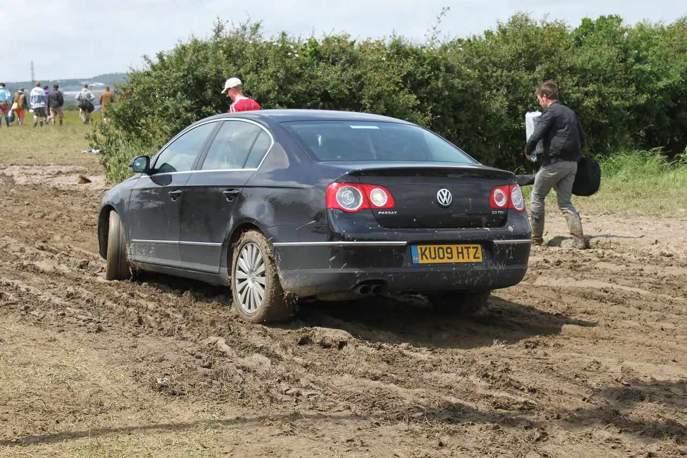
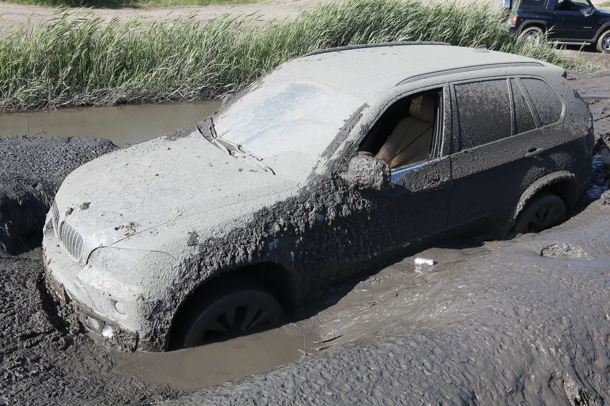
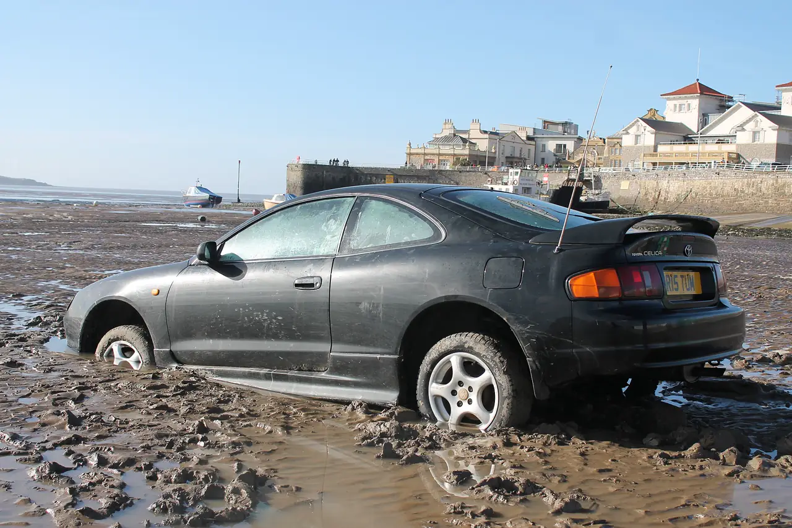
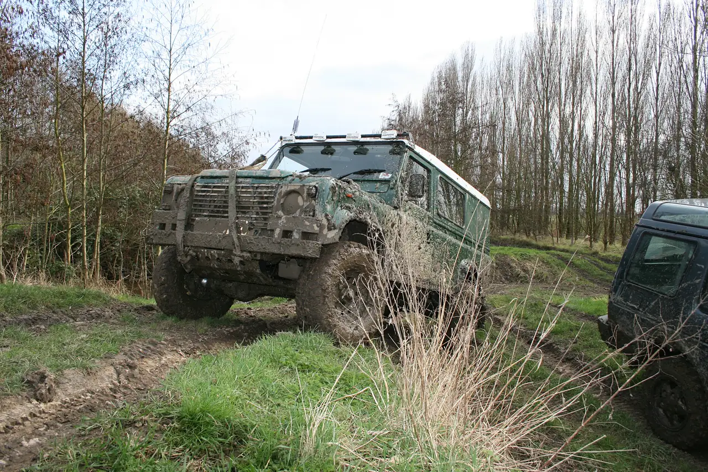
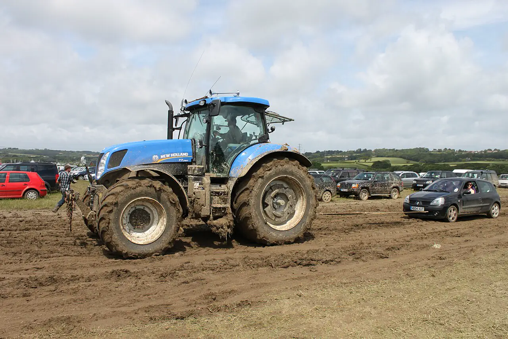

Situaties waarin wij u lostrekken
Modder, gras, zand, sneeuw of een zachte berm: elke ondergrond vraagt een eigen aanpak. Hieronder leest u hoe wij te werk gaan en waar u op kunt letten.

Vast in de modder
Wielen die doorslaan en een auto die steeds dieper wegzakt: in natte klei of modder komt u op eigen kracht vaak niet meer los.
Modder is verraderlijk. Hoe langer de wielen doordraaien, hoe dieper de auto zakt, tot de bodemplaat op de grond rust en de wielen geen gewicht meer dragen. Wij trekken de auto rustig en recht terug naar vaste grond, met een bergingsband aan het trekoog en waar nodig met de lier.
- Personenauto's, SUV's en bestelbussen
- Ook als de auto tot de as is weggezakt
- Rustig en recht trekken, zonder rukken aan de auto
Weiland, festival en evenement
Parkeren op gras gaat goed tot het gaat regenen. Bij festivals, bruiloften, open dagen en evenementen staan dan tientallen auto's vast.
Een parkeerweiland verandert na een bui in een modderbad. Wij helpen losse bezoekers, maar ook organisatoren die meerdere auto's van het terrein willen hebben. Bel ons vooraf als u een evenement organiseert en het weer omslaat: dan kunnen we afspreken wanneer we klaarstaan.
- Losse bezoekers op een parkeerweiland
- Organisatoren met meerdere vastgereden auto's
- Afspraken vooraf als er regen wordt verwacht

Strand, duin en wad
Mul zand bij een strandopgang of natte slik bij laagwater: wie daar vastrijdt, wil snel weg voordat het tij of de drukte komt.
In los zand graaft een auto zich razendsnel in. Op slik of wad speelt bovendien het tij mee. Wij komen met zandplaten en bergingsbanden en halen de auto terug naar vaste grond. Staat het water al bij de wielen, bel dan meteen en blijf zelf op een veilige plek.
- Strandopgangen en strandparkeren
- Duinpaden en mul zand
- Slik en wad bij laagwater: bel zo vroeg mogelijk

Berm en greppel
Even uitwijken voor een tegenligger en het wiel zakt weg in de zachte berm. Of de auto glijdt half de greppel in.
Een auto die scheef in de berm of greppel staat, trekken we gecontroleerd terug op de weg. Op een doorgaande weg zetten we de werkplek af en werken we zo kort mogelijk naast het verkeer. Ligt de auto in een sloot met water, dan is er meestal een kraanwagen nodig. Dat zeggen we u dan eerlijk.
- Wiel in de zachte berm
- Auto scheef in een droge greppel
- Veilig werken naast het verkeer

Sneeuw en ijzel
Een helling op die niet lukt, een oprit vol sneeuw of een auto die op ijzel van de weg is gegleden: in de winter staan auto's overal vast.
Bij sneeuw en ijzel draaien de wielen zonder grip, en elke poging om weg te rijden maakt de ondergrond gladder. Wij trekken de auto los en zetten hem terug op een plek waar u weer grip heeft. Bij gladheid zijn we druk: bel of app op tijd, dan plannen we u zo snel mogelijk in.
- Vast op een helling, oprit of parkeerplaats
- Van de weg gegleden in de sneeuw
- Winterse drukte: bel of app op tijd

Camper, caravan en aanhanger
Een camper op een natte camping, een caravan op het gras of een auto met aanhanger die het talud niet op komt.
Zwaardere combinaties vragen om een andere aanpak. Soms koppelen we de caravan of aanhanger eerst los, soms trekken we het geheel in één keer naar vaste grond. Vertel ons vooraf het type en ongeveer het gewicht, dan komen we met het juiste materiaal.
- Campers op een natte camping of standplaats
- Caravans en aanhangers op gras
- Geef type en gewicht door, dan komen we goed voorbereid
Vastgereden?
Bel of app ons direct. We zeggen eerlijk wanneer we er kunnen zijn.